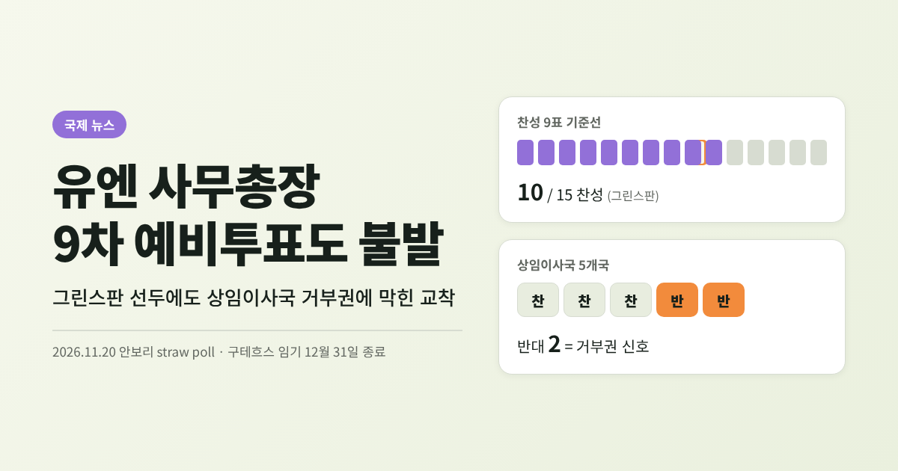
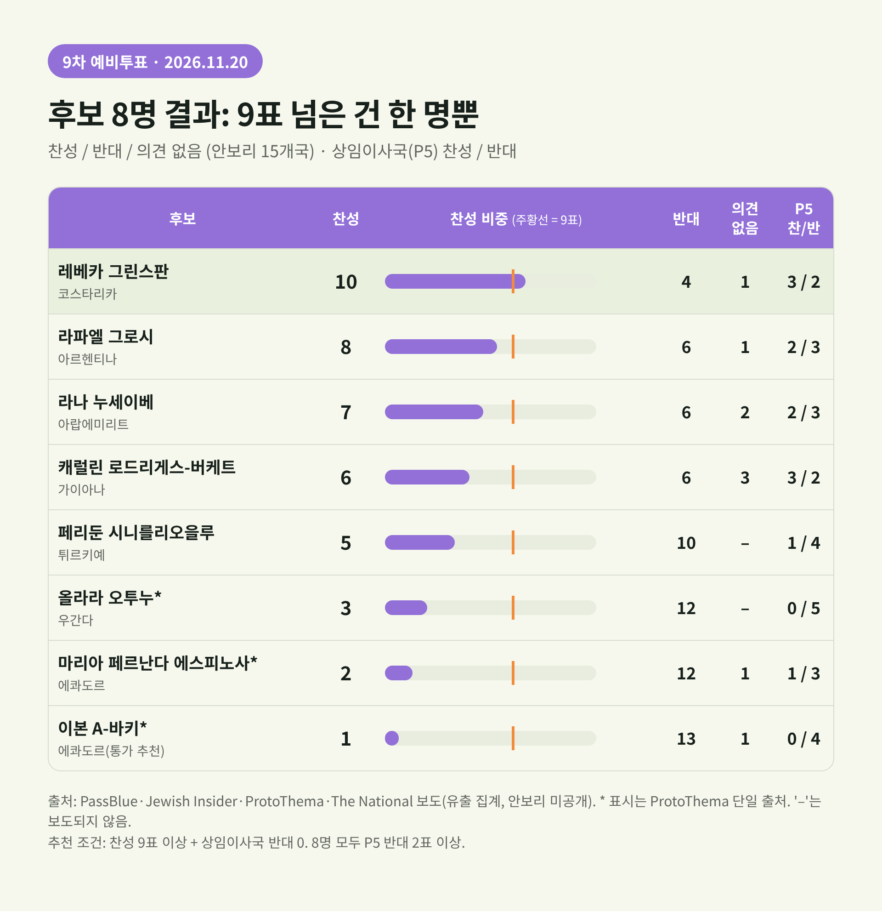
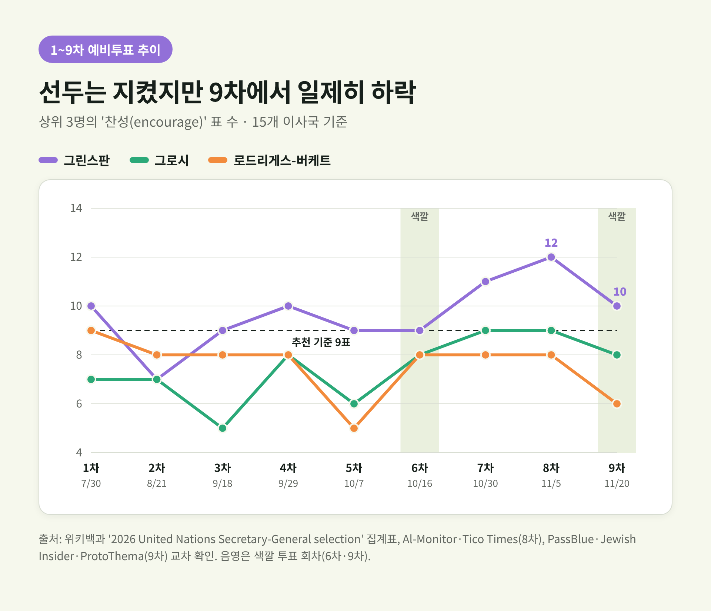
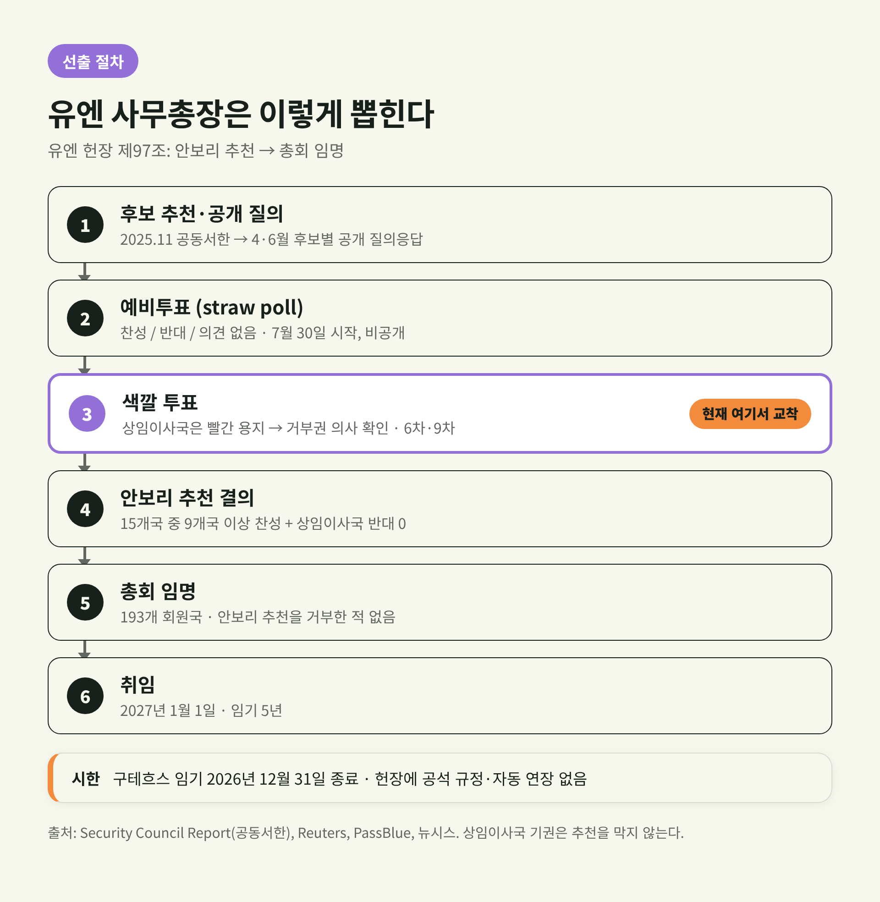
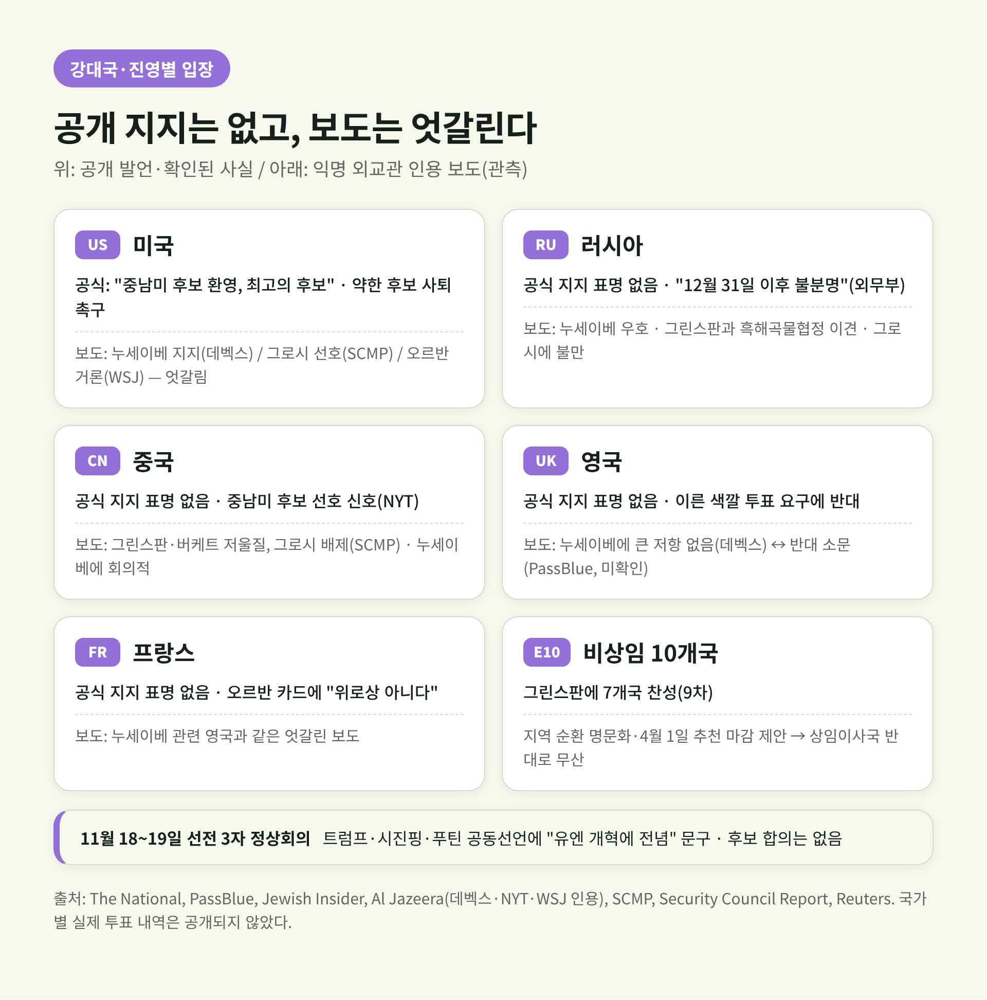
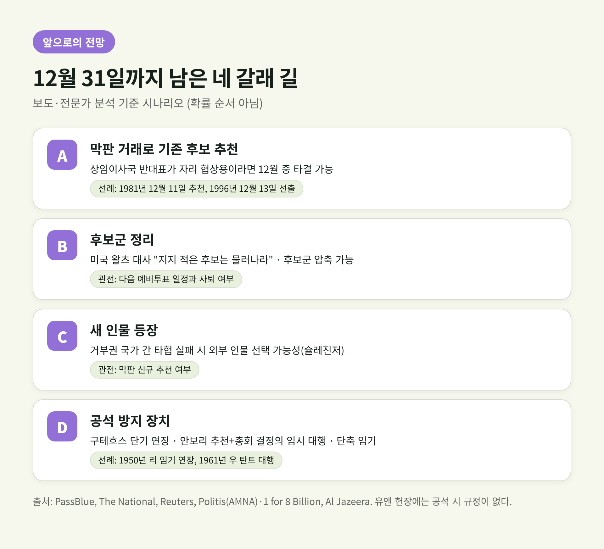

유엔 사무총장 9차 예비투표도 불발, 그린스판 선두에도 거부권에 막혔다

이번 글에서는 차기 유엔 사무총장을 고르는 안보리 9차 예비투표 결과와 그 의미를 정리해 보겠습니다. 결론부터 말씀드리면, 이번에도 합의 후보는 나오지 않았습니다.
세 줄 요약
- 11월 20일(현지) 9차 예비투표에서 레베카 그린스판(코스타리카)이 찬성 10표로 선두를 지켰지만, 상임이사국 2곳이 '반대'를 던졌습니다.
- 후보 8명 전원이 상임이사국 반대를 최소 2표씩 받았습니다. 거부권 없이 통과할 후보가 아직 없다는 뜻입니다.
- 구테흐스 사무총장 임기는 12월 31일 끝납니다. 6주도 남지 않아 사상 첫 '사무총장 공석' 가능성까지 거론됩니다.
■ 9차 예비투표에서 무슨 일이 있었나
유엔 안전보장이사회는 11월 20일(금, 뉴욕 현지) 차기 사무총장 후보 8명을 놓고 아홉 번째 비공식 예비투표(straw poll)를 치렀습니다. 15개 이사국이 후보마다 '찬성(encourage)', '반대(discourage)', '의견 없음' 가운데 하나를 고르는 방식입니다.
이번 투표는 색깔 투표였습니다. 상임이사국 5개국(P5)은 빨간 용지, 비상임 10개국은 흰 용지를 씁니다. 그래서 상임이사국의 '반대'가 몇 표인지 드러납니다. 이 반대는 사실상 거부권 경고로 읽힙니다. 이번 선출 과정에서 색깔 투표는 10월 16일 6차에 이어 두 번째입니다.
안보리는 결과를 공식 발표하지 않습니다. 다만 유엔 전문매체 PassBlue와 Jewish Insider, 그리스 매체 ProtoThema 등이 유출된 집계를 보도했고, 주요 수치는 서로 일치합니다.
- 레베카 그린스판(코스타리카, 유엔무역개발회의 UNCTAD 사무총장): 찬성 10, 반대 4, 의견 없음 1. 상임이사국 중 3곳 찬성, 2곳 반대.
- 라파엘 그로시(아르헨티나, 국제원자력기구 IAEA 사무총장): 8 / 6 / 1. 상임이사국 반대 3.
- 라나 누세이베(아랍에미리트): 7 / 6 / 2. 상임이사국 2곳 찬성, 3곳 반대. 7·8차와 똑같은 수치입니다.
- 캐럴린 로드리게스-버케트(가이아나): 6 / 6 / 3. 상임이사국 분포는 그린스판과 같은 3대 2.
- 페리둔 시니를리오을루(튀르키예): 5 / 10. 상임이사국 반대 4.
ProtoThema가 전한 유출 수치로는 올라라 오투누(우간다) 3 / 12, 마리아 페르난다 에스피노사(에콰도르) 2 / 12 / 1, 이본 A-바키(에콰도르) 1 / 13 / 1입니다. 이 세 명의 수치는 단일 출처라는 점을 감안해 읽으셔야 합니다.

공식 추천에는 15개국 중 9개국 이상 찬성, 그리고 상임이사국 반대 0이 필요합니다. 상임이사국이 기권하는 것은 괜찮습니다. 그린스판은 9표 기준선을 넘은 유일한 후보입니다. 그러나 상임이사국 2곳이 실제 표결에서도 같은 선택을 하면 추천은 막힙니다.
참고로 영국 매체 The National은 그린스판의 반대표를 "10표"로 적었습니다. 15개국 투표에서 찬성 10, 반대 10은 성립하지 않으므로 이 글은 여러 매체가 일치한 '10 / 4 / 1'을 따랐습니다.
■ 선두는 지켰지만 오히려 뒷걸음질
숫자만 보면 그린스판의 선두는 탄탄합니다. Jewish Insider 집계로는 아홉 번의 투표 중 여덟 번 1위였고, 9월 이후 매번 찬성 9표 이상을 받은 후보는 그린스판뿐입니다. 비상임 10개국 가운데 7개국도 그를 지지했습니다.
흐름은 조금 다릅니다. 2주 전 8차에서 그린스판은 찬성 12, 반대 3으로 역대 최고 기록을 냈습니다. 이번에는 찬성 10, 반대 4로 내려앉았습니다. 그로시도 9표에서 8표로, 버케트는 8표에서 6표로 줄었습니다.

코피 아난 전 사무총장의 보좌관을 지낸 민투 팜(Starling Institute)은 결과가 "우려스럽다"며 "합의는 없고 오히려 한 걸음 물러선 듯하다"고 말했습니다(The National). 역사학자 스티븐 슐레진저는 첫 예비투표 뒤 약 113일이 지나 유엔 역사상 가장 긴 선출 과정이 됐다고 짚었습니다(PassBlue).
예전에는 색깔 투표가 마지막 정리 단계였습니다. 지금은 거부권 의사를 확인하는 무대가 됐습니다. 10월 16일 첫 색깔 투표에서도 모든 후보가 상임이사국 반대를 2표 이상 받았고, 위키백과는 이를 전례 없는 일로 기록하고 있습니다.
■ 왜 중요한가 — 6주 남은 시계
구테흐스 사무총장의 두 번째 임기는 2026년 12월 31일 끝납니다. 새 사무총장은 2027년 1월 1일부터 5년 임기를 시작해야 합니다. 다음 투표 날짜는 아직 정해지지 않았습니다.
공식 마감 시한은 없습니다. 1996년 코피 아난은 12월 13일에야 선출됐고, 1981년 페레스 데 케야르도 12월 11일 추천을 받았습니다. 그래서 '아직 늦지 않았다'는 시각도 있습니다.
문제는 유엔 헌장에 공석 규정이 없다는 점입니다. 임기 자동 연장도, 사무부총장의 자동 승계도 없습니다. Reuters에 따르면 사무총장이 후임 없이 임기를 마친 전례도 없습니다. 전직 유엔 관리 다니엘 사프란-혼은 "1월 1일 사무총장이 없으면 아무도 책임자가 아니다", "고위직 임명도 예산도 할 수 없다"고 경고했습니다.
그래서 유엔 안팎에서는 비상계획이 거론됩니다. 시민단체 1 for 8 Billion이 정리한 선택지는 구테흐스 임기의 단기 연장, 그리고 안보리 추천과 총회 결정을 거친 임시 대행 임명입니다. 1950년 총회가 트리그브 리의 임기를 안보리 추천 없이 연장한 사례, 1961년 우 탄트를 대행으로 세운 사례가 선례로 꼽힙니다. 러시아 외무부의 키릴 로그비노프도 "12월 31일 이후 어떻게 될지 불분명하다"고 TASS에 말했습니다.
■ 선출 절차는 어떻게 돌아가나
절차의 뼈대는 유엔 헌장 제97조입니다. 안보리가 추천하고 193개 회원국 총회가 임명합니다. 총회가 안보리 추천을 거부한 적은 없습니다. 사실상 승부는 안보리에서 납니다.
이번 선출은 2025년 9월 총회 결의 79/327과, 같은 해 11월 25일 총회의장·안보리의장의 공동서한으로 시작됐습니다. 후보는 비전 선언문과 자금 출처를 내야 했고, 4월과 6월에는 후보별 공개 질의응답이 열렸습니다. 안보리는 7월 30일 첫 예비투표를 치렀습니다.

■ 강대국은 각각 무엇을 원하나
먼저 짚어 둘 점이 있습니다. 어느 상임이사국도 지지 후보를 공개적으로 밝히지 않았습니다. 아래는 대부분 익명 외교관을 인용한 보도이며, 서로 엇갈리는 내용도 있습니다.
미국의 공식 메시지는 마이크 왈츠 주유엔대사의 발언이 전부에 가깝습니다. "중남미 후보의 등장을 환영한다"면서도 "최고의 후보를 원한다"고 했고, 지지가 적은 후보는 물러나라고 촉구했습니다. 보도는 갈립니다. 데벡스를 인용한 알자지라는 미국이 러시아와 함께 누세이베를 지지한다고 전했고, 남중국모닝포스트(SCMP) 등은 그로시를 '워싱턴이 선호하는 후보'로 묘사했습니다. 월스트리트저널은 미국이 빅토르 오르반 전 헝가리 총리를 띄웠다고 보도했습니다.
러시아는 누세이베에 우호적이라는 보도가 있습니다. 그린스판과는 흑해곡물협정 중단 논리를 두고 이견이 있었고, 그로시가 기관장 역할을 넘어섰다는 불만도 분석가들이 전합니다.
중국은 중남미 후보 선호를 내비쳤다는 뉴욕타임스 보도가 있습니다. SCMP는 베이징이 그린스판과 버케트 사이에서 저울질하며 그로시는 배제했다고 전했습니다. 누세이베에는 회의적이라는 관측이 나옵니다.
영국·프랑스는 누세이베에 큰 저항이 없었다는 보도(데벡스)와, 누세이베 반대표가 중국·영국·프랑스에서 나왔다는 미확인 소문(PassBlue)이 엇갈립니다. 프랑스 바로 외무장관은 오르반 카드를 두고 사무총장직은 "위로상"이 될 수 없다며 선을 그었습니다.
비상임이사국과 글로벌사우스의 표는 그린스판 쪽으로 기울었습니다. 비상임 10개국 중 7개국이 찬성했습니다. 이들은 지역 순환을 명문화하고 추천 마감일을 4월 1일로 정하자고 했지만, 상임이사국 반대로 반영되지 않았습니다(Security Council Report).

투표 하루 전인 11월 18~19일, 중국 선전에서는 트럼프·시진핑·푸틴 3자 정상회의가 열렸습니다. 공동선언에는 "유엔 개혁에 전념한다"는 문구가 들어갔습니다. 그러나 누가 그 개혁을 이끌지에 대한 합의는 나오지 않았습니다.
국제위기그룹(ICG)의 리처드 가우언은 "세계 최고 외교관을 뽑는 합리적 방식인가? 전혀 아니다"라고 꼬집었습니다(Reuters). 1 for 8 Billion의 벤 도널드슨은 예비투표의 상임이사국 반대가 곧 거부권은 아니며, 자국민 고위직 배정 같은 양보를 얻어내는 지렛대로 쓰여 왔다고 설명합니다(알자지라).
■ '첫 여성 사무총장'과 '중남미 차례'
유엔은 1945년 이후 81년 동안 여성 사무총장을 배출한 적이 없습니다. 결의 79/327을 반영한 공동서한은 회원국에 여성 후보를 "강력히" 고려하라고 권했습니다. 미국은 이 문구에 반대했지만 문구는 유지됐습니다. 현재 활동 중인 후보 8명 가운데 5명이 여성입니다.
지역 순환은 성문 규칙이 아닌 관행입니다. 역대 사무총장 9명 중 중남미 출신은 페루의 페레스 데 케야르(1982~1991) 한 명뿐입니다. 이번에는 중남미·카리브 그룹이 유리하다는 평가가 많고, 후보 8명 중 5명이 이 지역 출신입니다.
두 명분은 맞물려 있습니다. 그린스판이 선출되면 첫 여성이자 첫 유대인 사무총장이 됩니다(알자지라). 다만 명분이 표를 보장하지는 않습니다. UNCTAD의 팔레스타인 경제 보고서를 둘러싼 친이스라엘 단체의 비판, 러시아와의 이견이 동시에 거론됩니다. 버케트 역시 이스라엘 비판 발언으로 미국 쪽의 경계를 받고 있습니다. 누세이베는 아랍에미리트의 수단 반군 지원 의혹이 부담입니다. 아랍에미리트는 이를 부인합니다.
■ 한국에는 어떤 의미가 있나
한국은 2024~2025년 비상임이사국 임기를 마쳐, 올해 예비투표에는 표가 없습니다. 그렇다고 무관한 일은 아닙니다.
반기문 8대 사무총장(2007~2016)은 생존한 유일한 전직 사무총장입니다. 6월 25일 제주포럼에서는 그로시·그린스판·버케트 등 후보들이 한자리에 모였고, 반 전 총장은 사무총장이 '희생양'이 될 수 있고 유엔이 심각한 재정 위기에 놓였다고 경고했습니다. 조현 외교장관은 대면 참석 후보 5명을 모두 만났습니다. 특정 후보 지지 표명은 보도되지 않았습니다. 그로시는 이 자리에서 북한 핵 위협에 대한 우려를 밝혔습니다.
필자의 해석을 덧붙이자면, 공석이 생기면 고위직 임명과 예산이 멈출 수 있다는 경고는 한국에도 가볍지 않습니다. 대북 제재 감시, 인도적 지원, 평화유지활동처럼 한국이 관심을 두는 의제가 사무국의 실행력에 기대고 있기 때문입니다. 미·중·러가 거부권으로 맞서는 지금의 구도는 한반도 문제가 안보리에서 막히는 구도와도 닮아 있습니다. 누가 되든 강대국 사이에서 독립성을 지킬 수 있는지가 한국이 지켜볼 대목일 것입니다.
■ 앞으로의 전망
보도와 분석을 종합하면 갈림길은 대략 네 갈래입니다.
- 막판 거래로 기존 후보 추천 — 1981년·1996년처럼 12월에 타결되는 경우입니다. 상임이사국 반대표가 자리 협상용이라면 가능성은 남아 있습니다.
- 후보 정리 — 왈츠 대사의 사퇴 촉구대로 후보군이 좁혀질 수 있습니다.
- 새 인물 등장 — 슐레진저는 거부권 국가들이 타협하지 못하면 외부 인물을 고를 수 있다고 경고했습니다.
- 공석 방지 장치 — 구테흐스 단기 연장, 임시 대행 임명, 단축 임기 추천 같은 타협안입니다.

어느 쪽이든 확실한 것은 시간이 상임이사국의 편이 아니라는 점입니다. 가우언은 데드라인을 넘기면 거부권 국가들에 "극도로 창피한 일"이 될 것이라고 했습니다.
정리하면 이렇습니다. 이번 9차 투표는 후보의 경쟁력보다 상임이사국의 셈법이 결과를 좌우한다는 사실을 다시 보여줬습니다.
"9표는 모였지만, 마지막 한 표의 반대가 모든 것을 멈춘다."
세계 최고 외교관을 끝내 제때 뽑을 수 있겠느냐고 물으신다면, 그 답은 후보가 아니라 다섯 나라의 손에 있다고 말씀드리겠습니다.
참고자료
- The National — UN Security Council's ninth straw poll brings no resolution in race for next secretary general (2026-11-20)
- PassBlue — UN Secretary-General Race Remains Deadlocked as Veto Powers Fail to Reach Consensus (2026-11-20)
- Jewish Insider — Grynspan maintains lead in U.N. secretary-general straw poll, but faces bloc of opposition (2026-11-20)
- ProtoThema English — Ninth informal vote for UN Secretary-General ends in deadlock (2026-11-20)
- The Diplomatic Insight — UN Secretary-General Race Deadlocked, Every Candidate Draws Veto Opposition (2026-11-21)
- Politis(AMNA) — UN Faces Leadership Vacuum as Secretary-General Race Stalls (2026-11-21)
- Security Council Report — Ninth Security Council Straw Poll on UN Secretary-General Candidates (2026-11)
- Security Council Report — Joint Letter from the Presidents of the Security Council and the General Assembly (2025-11)
- Wikipedia — 2026 United Nations Secretary-General selection
- Al-Monitor — Costa Rica's Grynspan extends lead in UNSG poll, Nusseibeh places fourth (2026-11-05)
- The Tico Times — Grynspan Wins 12 of 15 Votes in Eighth UN Secretary-General Poll (2026-11-07)
- Al Jazeera — US and rivals spar over next UN boss as race lurches towards deadline (2026-11-16)
- Al Jazeera — Rafael Grossi is eyeing the UN's top job (2026-11-18)
- Reuters 분석(TimesLIVE 전재) — UN could soon be leaderless as race to succeed Guterres stalls (2026-11-19)
- SCMP — China set to decide if Costa Rican or Guyanese diplomat becomes first woman UN chief
- UN Geneva — Five countries elected to serve on UN Security Council (2025-06)
- 세계일보 — 반기문의 '힘'… 유엔 사무총장 후보 5명, 25일 제주 집결 (2026-06-18)
- 뉴닉 — 차기 유엔 사무총장 후보들이 제주에 모여 유엔 개혁을 촉구 (2026-06-25)